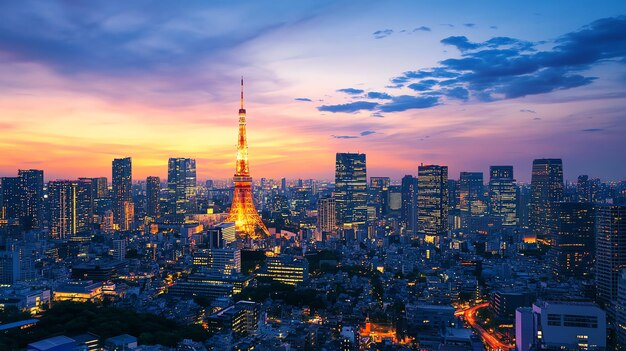
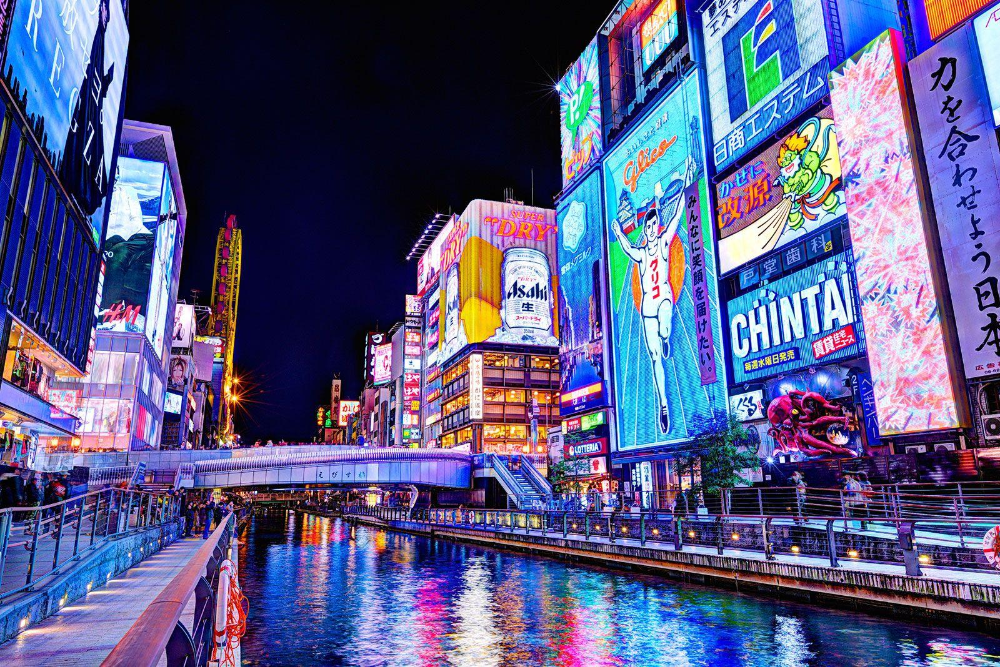
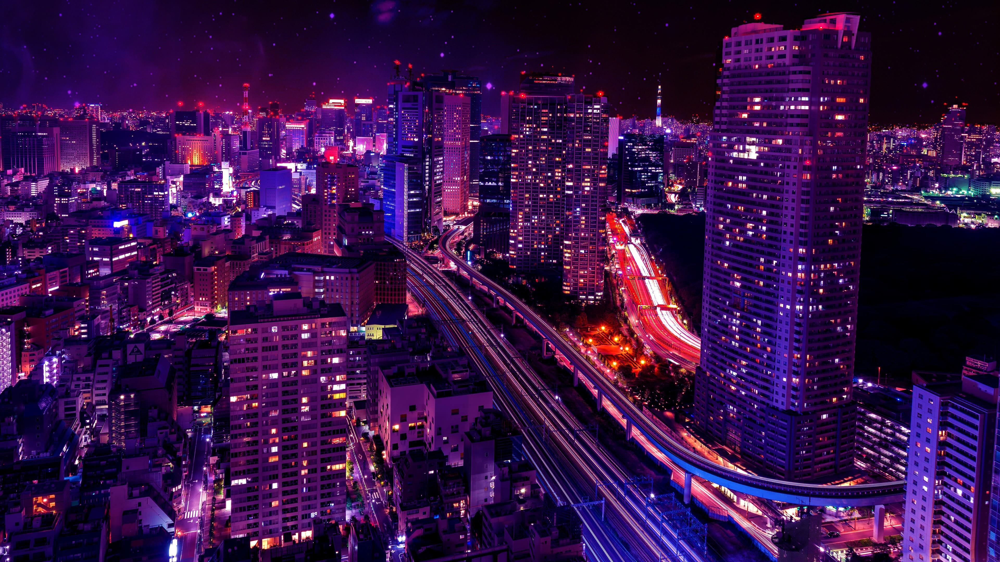
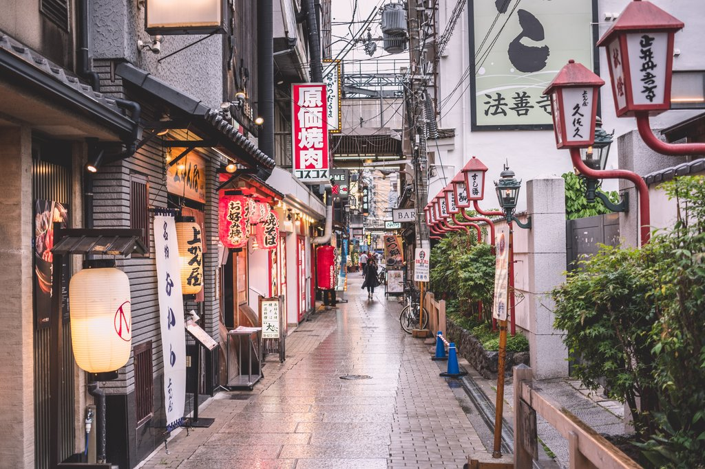
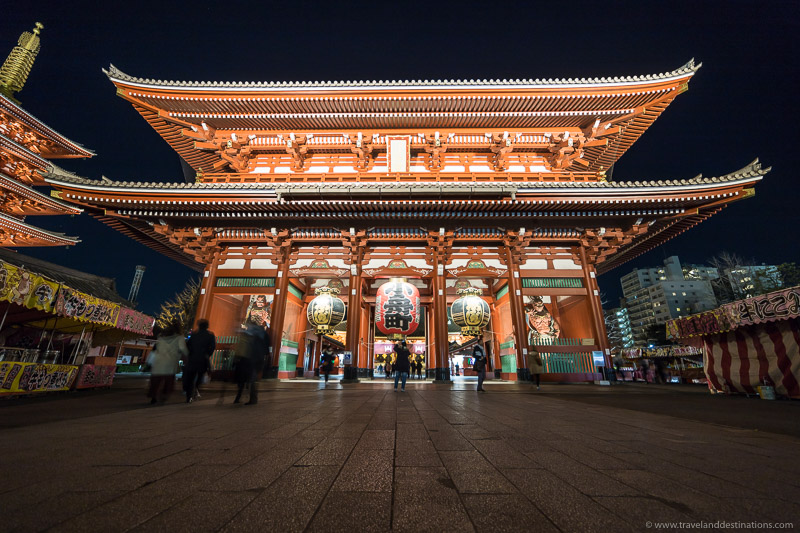
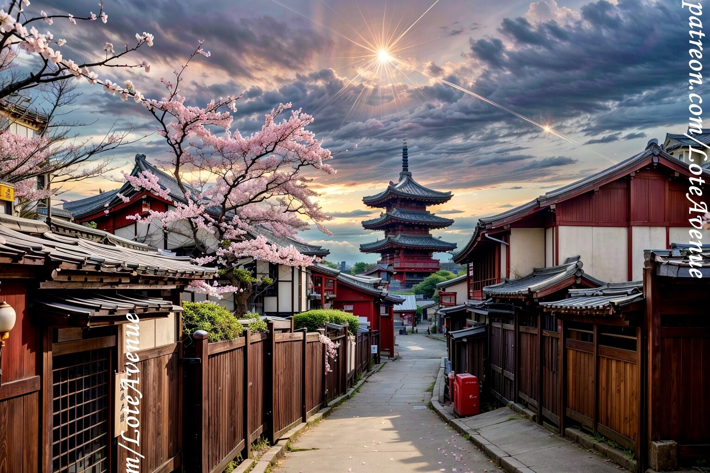

Cities of Japan
Japanese cities represent a unique dialogue between past and future, where centuries-old traditions coexist with advanced technology and modern urban life.

Cities in Japan are carefully structured environments shaped by history, geography, and cultural values. From ancient capitals built around temples and imperial palaces to futuristic megacities filled with neon lights and digital infrastructure, Japanese cities reflect continuous adaptation and innovation.
Despite their size and rapid pace, Japanese cities maintain a strong sense of order, cleanliness, and respect for shared space. Urban life is guided by harmony, efficiency, and community, allowing tradition and modernity to exist side by side.

Urban Identity of Japanese Cities
The identity of Japanese cities is deeply influenced by historical development and cultural philosophy. Many cities evolved from former castle towns or religious centers, which still shape their layout and symbolic landmarks today.
Traditional neighborhoods, sacred spaces, and historical architecture remain integrated into modern cityscapes, creating a layered urban identity where the past continues to inform the present.

Infrastructure and Daily Life
Japanese cities are internationally recognized for their highly efficient infrastructure. Public transportation systems enable fast, reliable, and accessible movement across urban and regional areas, shaping everyday routines and work culture.
Despite intense urban density, cities remain highly livable. Public spaces are designed to support both functionality and comfort, reflecting a balance between productivity and quality of life.
Modern Cities and Global Influence
Modern Japanese cities such as Tokyo and Osaka have become global symbols of technological progress and contemporary culture. Innovation, digital infrastructure, and creative industries play a major role in shaping the global image of Japan.
At the same time, these cities actively preserve cultural heritage, demonstrating how rapid modernization can coexist with deep respect for tradition and identity.
Visual Highlights of Japanese Cities


